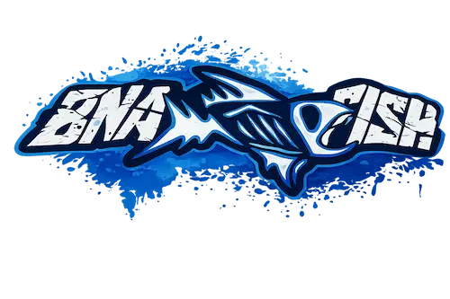
Río, amistad y camaradería.
La Barra Pesquera BNA nació entre compañeros del Banco de la Nación Argentina, sucursal Goya, unidos por una pasión común: la pesca. Lo que empezó como salidas informales al río fue creciendo solo, con naturalidad, hasta convertirse en una barra con identidad propia.
Desde alrededor del año 2016, somos aproximadamente 30 integrantes — la mayoría de Goya, Corrientes, y el resto de ciudades y zonas cercanas. No somos un club formal. Somos una familia que se junta en el río, en la isla, alrededor del fuego y donde haga falta dar una mano.
Dentro de la barra hay familias enteras: padres que fomentaron el amor por la pesca en sus hijos, y hoy pescan juntos bajo la misma bandera.
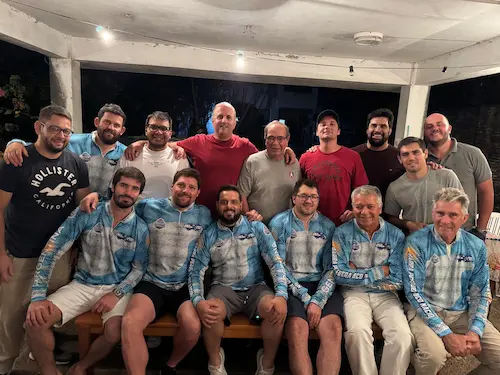
"No somos un club. Somos una familia."
Una de las premisas más importantes de la barra: la pesca es con devolución. Cada pez capturado vuelve al río. No pescamos para llevarnos — pescamos para el encuentro, la emoción de la picada y el respeto por el Paraná.
Salimos en lancha y nos instalamos en la isla. Carpa armada, fogón encendido, el sonido del Paraná de fondo. Los campamentos duran de 1 a 3 días — el destino siempre depende de adónde haya pique.
Click para ver foto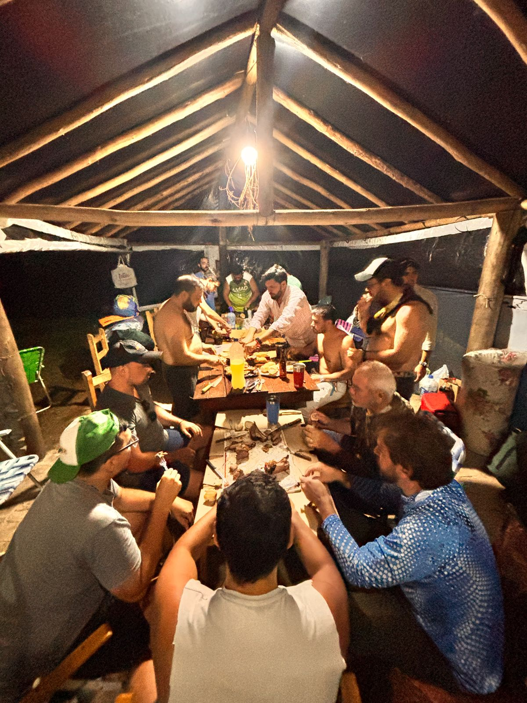
Click para volverUna vez por semana, la barra se junta en la casa de algún integrante. Sin sede fija — la rotación es intencional. Al frente de los fuegos está el chef oficial Nicolás Samaniego. Casi siempre es asado.
Click para ver foto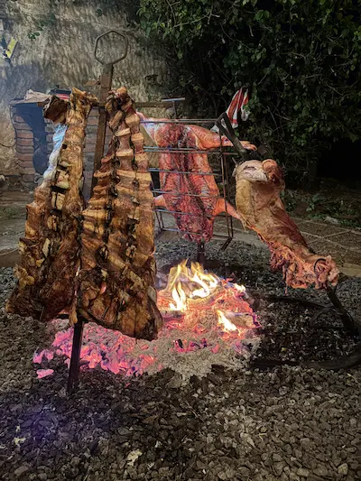
Click para volverLa barra compite en torneos bajo su nombre. Se arman grupos de 3 integrantes por lancha y se sale a pescar con todo. La preparación, la organización y el espíritu competitivo son parte del ADN de la barra.
Click para ver foto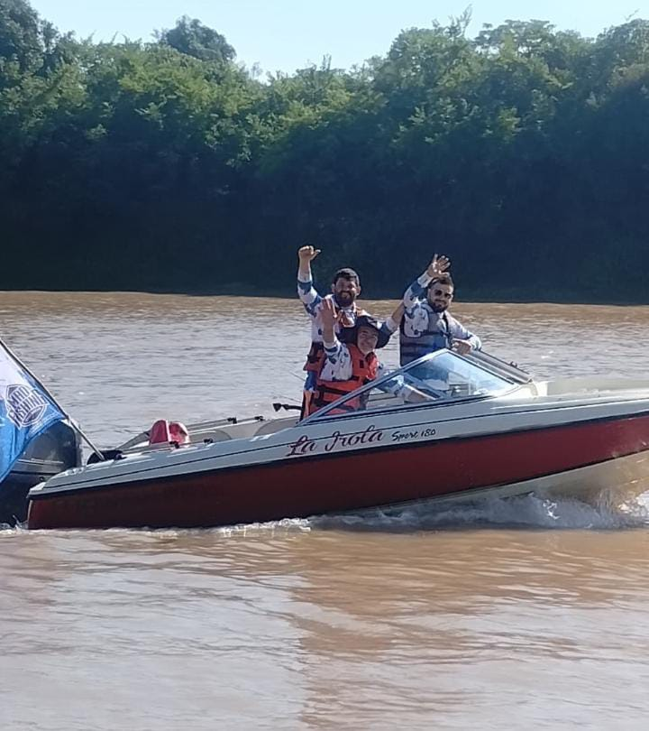
Click para volverEl Mundial de Pesca · Goya, Corrientes
La Fiesta Nacional del Surubí en Goya es el corazón palpitante de cada goyano y, especialmente, de la Barra Pesquera BNA. Una celebración anual que es mucho más que un evento — es la encarnación del espíritu goyano, un homenaje a nuestras raíces y tradiciones.
Todos juntos para escuchar el primer himno en casa. En cuanto suena "Amarradero del viento...", la adrenalina hace el resto.
Todas las barras se reúnen a compartir una cena. Cada barra cocina para las demás — camaradería pura.
Cada barra presenta su candidata. Nuestra barra lleva su representante con orgullo goyano.
A las 14hs arranca la competencia. Más de mil lanchas navegando el riacho a toda velocidad — un espectáculo único en el mundo. El torneo continúa hasta las 7am del domingo.
El broche de oro de la fiesta. La barra se reúne a celebrar, sin importar el resultado. El podio es un sueño — y ese día va a llegar.
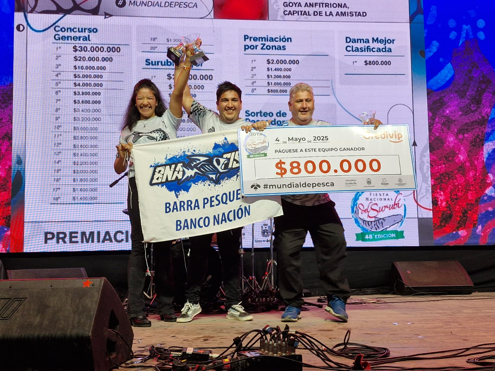
En 2025, uno de los momentos que más nos hizo vibrar: la familia Cian subió al escenario mayor de la Fiesta Nacional del Surubí y se quedó con uno de los premios. Éxtasis total, alegría compartida, orgullo de barra.
"La solidaridad también es ser barra."
La Barra Pesquera BNA no solo vive del río. También da. Los actos caritativos son una costumbre de la barra, no una excepción.
Donamos electrodomésticos y juguetes a la ONG SURSUM de Goya, que trabaja con personas en situación de vulnerabilidad.
Cada fin de año, la barra se organiza para juntar juguetes y acercarlos a quienes más los necesitan.
La solidaridad no se detiene. Nuevas acciones caritativas se irán sumando aquí.
Torneos, salidas, encuentros y momentos que definen quiénes somos.
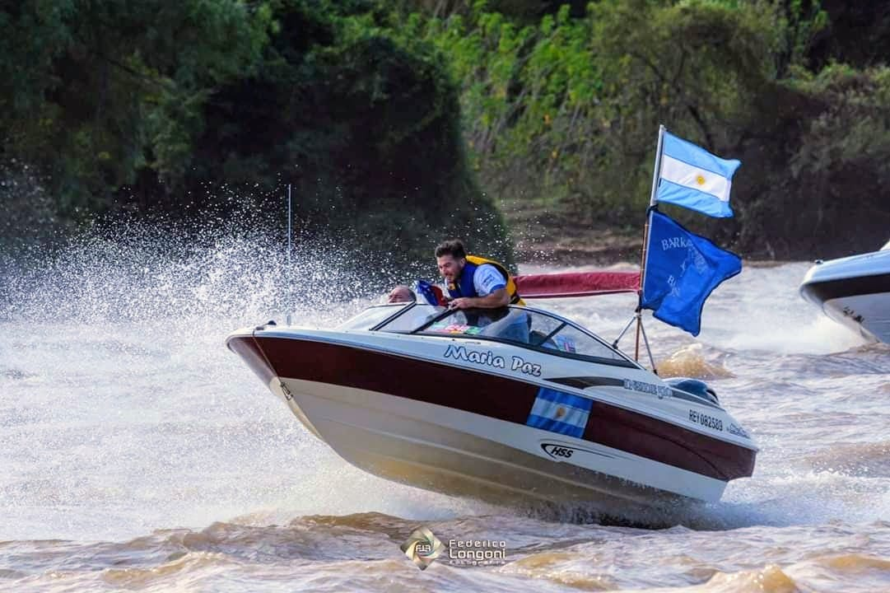
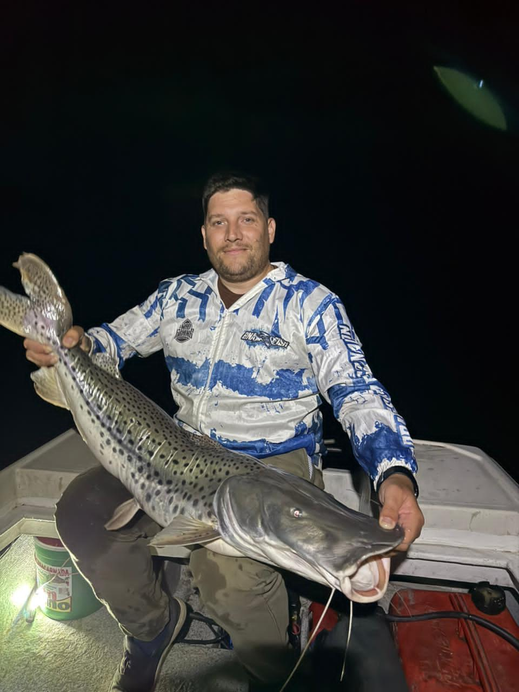
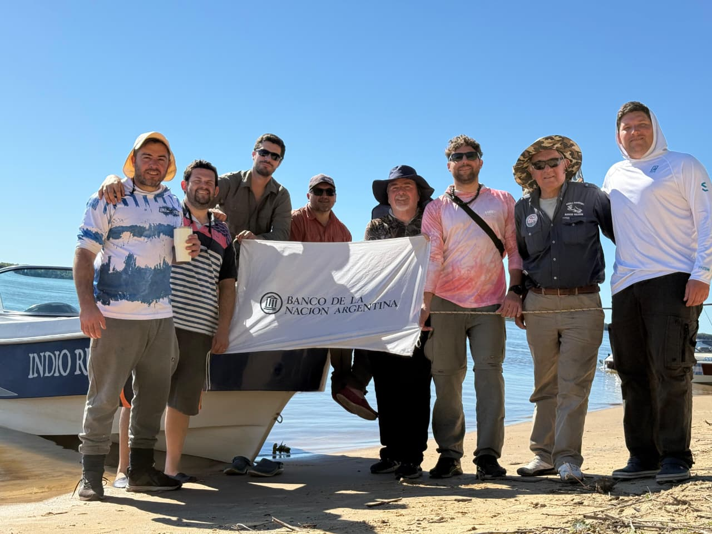
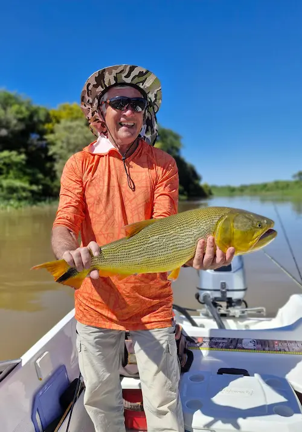
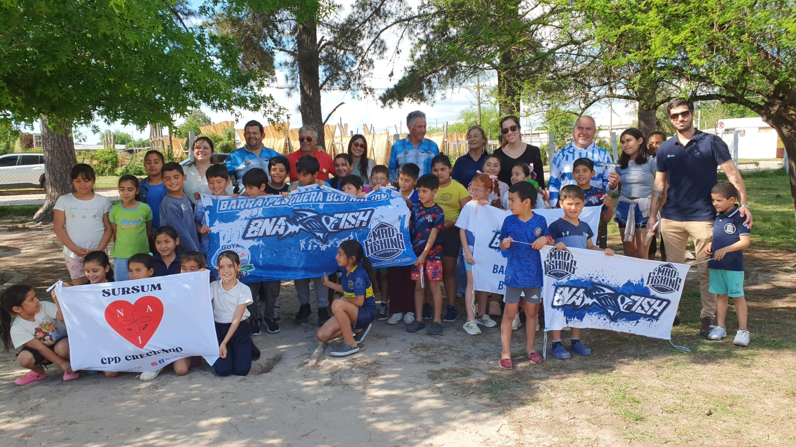
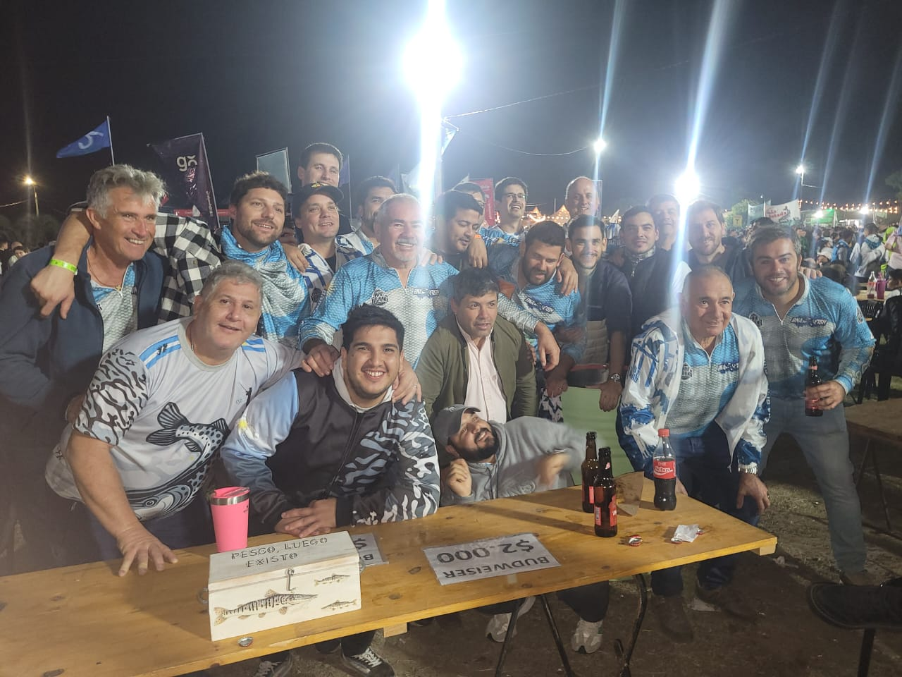
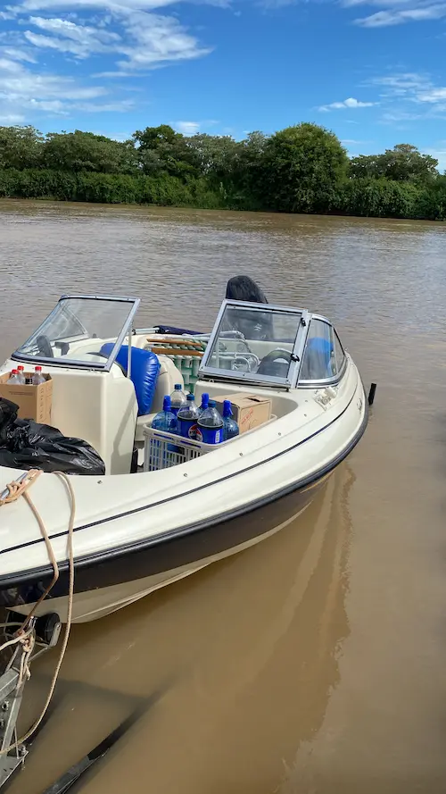
Gracias eternas. Me hicieron sentir parte de esta gran barra.
Muchas gracias por la invitación y la amabilidad. Espero poder verlos pronto y el año que viene estar nuevamente con ustedes, representando esta hermosa barra. Un abrazo grande y cálido — Familia Cian.
Más de una vez nos preguntamos si queríamos ser una gran barra pesquera o una barra de amigos. Elegimos ser una barra modesta de amigos que valga la pena.
Demostraron ser muy buena gente, y eso nos alegra enormemente. Poder compartir con ustedes y que sus logros sean los de todos no tiene precio.
Hay niños que no reciben nada en Navidad, y muchos ya estaban acostumbrados a eso. Hoy, gracias a ustedes, pudimos cambiarles aunque sea un momento. Muchas gracias de corazón a toda la barra.
Gracias eternas. Me hicieron sentir parte de esta gran barra.
Muchas gracias por la invitación y la amabilidad. Espero poder verlos pronto y el año que viene estar nuevamente con ustedes, representando esta hermosa barra. Un abrazo grande y cálido — Familia Cian.
Más de una vez nos preguntamos si queríamos ser una gran barra pesquera o una barra de amigos. Elegimos ser una barra modesta de amigos que valga la pena.
Demostraron ser muy buena gente, y eso nos alegra enormemente. Poder compartir con ustedes y que sus logros sean los de todos no tiene precio.
Hay niños que no reciben nada en Navidad, y muchos ya estaban acostumbrados a eso. Hoy, gracias a ustedes, pudimos cambiarles aunque sea un momento. Muchas gracias de corazón a toda la barra.
¿Querés sumarte a la barra, colaborar con nuestras obras o simplemente saludarnos? Escribinos.